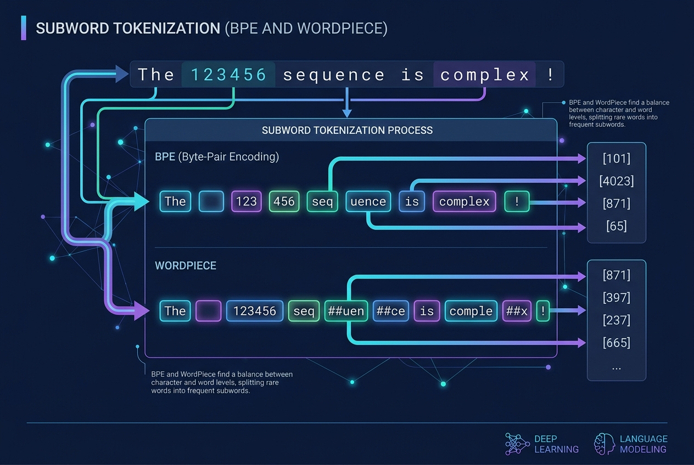

Tokenization, Unpacked: BPE, WordPiece, and the Number Problem
Data Science
Artificial Intelligence
LLM
Tokenization
BPE
WordPiece
Before an LLM sees a single vector, tokenization has already made irreversible choices about the input. This article implements BPE from scratch on a tiny corpus, contrasts it with WordPiece, and shows with runnable code why the way numbers get shattered into tokens is a first-order concern for anyone using LLMs on quantitative data.
Author
Prof. Shin
Published
July 15, 2026

[Concept Visualization] A diagram summarizing the key concepts of this post.
The layer everyone skips
Every LLM benchmark, every prompt engineering trick, every scaling-law plot sits on top of a preprocessing step that is almost never discussed: the tokenizer. Before the model produces a single embedding, a fixed algorithm has already split raw text into a sequence of integers from a fixed vocabulary, and that split determines what the model can even see. Two sentences that mean the same thing but use different spacing or punctuation become different token sequences with different attention patterns, different perplexities, and different training signal. A number like 2026-07-15 is not one entity to the model; it is a sequence of subword fragments whose statistics were shaped by whatever text happened to appear in the tokenizer’s training corpus.
For anyone using LLMs on numerical or scientific data — forecasting, code, tables, financial time series — the tokenizer is not a background detail. It is the first place systematic errors get injected, and undoing them at the model level is expensive. This article opens the tokenizer: what Byte Pair Encoding actually does (implemented from scratch on a small corpus so the merge rules are visible), how WordPiece differs, and why numeric strings fragment in a way that hurts downstream tasks. The BPE algorithm as used in NLP is due to Sennrich et al. (2016); WordPiece traces to Schuster and Nakajima (2012) and its BERT adaptation to Devlin et al. (2019). The specific pathology of numeric tokenization has been documented in Thawani et al. (2021) and Nogueira et al. (2021).
What the tokenizer decides
Given a string, a tokenizer emits a sequence of integers \(x_1, \dots, x_n\) where each \(x_i \in \{1, \dots, V\}\) is an index into a fixed vocabulary of size \(V\). Three properties of that map matter for downstream behavior:
Coverage — the probability of emitting the unknown-token symbol on natural inputs — must be zero for a modern tokenizer to be useful; byte-level schemes guarantee this by construction. Fertility is the average number of tokens per input word, and it controls both the effective context length and the compute cost per document (a tokenizer with fertility 1.4 costs 40% more per document than one with fertility 1.0). Alignment is the property that semantically identical inputs should tokenize into overlapping subsequences, so the model can reuse learned representations; whitespace and punctuation policies in the tokenizer make or break this.
Word-level tokenization fails on all three: it either explodes the vocabulary or emits many <unk>s. Character-level tokenization has coverage 1 and small \(V\) but explodes fertility, wasting attention budget on capturing morphological regularities the model then has to relearn from scratch. Subword tokenization — BPE, WordPiece, Unigram — is the compromise that has become the default (Bostrom and Durrett 2020).
BPE from scratch, on a corpus you can hold in your head
The BPE algorithm is simple enough to implement in a few dozen lines. Given a corpus, count word frequencies, split each word into a sequence of characters (plus an end-of-word marker), then repeatedly find the most frequent adjacent pair across the corpus and merge it into a single token. Each merge is recorded; at inference time, the same merges are applied in the same order to any input. The merges are the tokenizer.
from collections import Counter, defaultdictcorpus = ["the model predicts sales","the model predicts demand","the model predicts prices","modeling sales and demand","modeling prices and volumes","predicting sales volumes","predicting demand shocks",]def word_freqs(corpus): c = Counter()for line in corpus:for w in line.lower().split(): c[w] +=1return cdef make_splits(freqs):return {w: list(w) + ["</w>"] for w in freqs}def get_pair_stats(splits, freqs): stats = defaultdict(int)for w, split in splits.items():for i inrange(len(split) -1): stats[(split[i], split[i +1])] += freqs[w]return statsdef merge_pair(pair, splits): a, b = pair new = {}for w, split in splits.items(): out, i = [], 0while i <len(split):if i <len(split)-1and split[i]==a and split[i+1]==b: out.append(a+b); i +=2else: out.append(split[i]); i +=1 new[w] = outreturn newfreqs = word_freqs(corpus)splits = make_splits(freqs)vocab =set(ch for w in splits.values() for ch in w)merges, sizes = [], [len(vocab)]for _ inrange(12): stats = get_pair_stats(splits, freqs)ifnot stats: break best =max(stats, key=stats.get) splits = merge_pair(best, splits) merges.append(best) vocab.add(best[0]+best[1]) sizes.append(len(vocab))print("first 8 merges:")for i, m inenumerate(merges[:8], 1):print(f" {i:2d}. {m[0]!r} + {m[1]!r} -> {(m[0]+m[1])!r}")print("\nfinal splits (first 5 words):")for w inlist(splits.keys())[:5]:print(f" {w:12s} -> {splits[w]}")
The merges are legible. The very first two — 's' + '</w>' and 'd' + 'e' — capture the corpus’s most common bigrams: the plural marker and the “de” that starts demand, deliver, decrease, and many other function words in real corpora. By the eighth merge, 'model' is a single token because it appears frequently and its subword pieces ('mo', 'de', 'l') get merged step by step. This bottom-up construction is exactly the property Sennrich et al. (2016) argued for: frequent strings become atomic, rare strings decompose into their most reusable pieces, and the boundary between the two is determined by the data rather than by an ad-hoc rule.
Figure 1 shows the vocabulary size climb one entry at a time as merges accumulate. That linear growth is deceptively simple: each merge deletes zero tokens (the atoms are still there for words that don’t get merged) and adds one new token. In real training, the tokenizer stops at a target vocab size, and the last merges tend to be the most informative — they capture rare-but- recurring morphology like -tion</w> or -ing</w>.
Figure 1: Vocabulary size after each BPE merge on the toy corpus. Growth is linear by construction — every merge adds one new token — but the information content of a merge is not uniform. Later merges tend to capture rarer morphological patterns and are the ones that most affect fertility on unseen text.
WordPiece: the same idea, a different objective
BPE picks the merge that maximizes co-occurrence frequency. WordPiece, used by BERT (Devlin et al. 2019) and originally proposed for Japanese/Korean speech (Schuster and Nakajima 2012), picks the merge that maximizes the likelihood of the training corpus under a unigram language model. If tokens \(a\) and \(b\) have counts \(c(a)\) and \(c(b)\) and the pair \(ab\) has count \(c(ab)\), WordPiece picks the pair that maximizes
\[
\frac{c(ab)}{c(a)\, c(b)}
\tag{2}\]
which normalizes the raw pair count by how frequent the pieces already are. The practical effect is that WordPiece is less aggressive about merging pairs that are frequent because their pieces are frequent (like t + h) and more willing to merge pairs whose co-occurrence is specifically high. WordPiece also encodes non-initial subwords with a marker (##ing, ##tion) so the tokenization is trivially invertible into words. Trained on the same corpus, the two produce structurally similar but not identical splits:
from tokenizers import Tokenizerfrom tokenizers.models import BPE, WordPiecefrom tokenizers.pre_tokenizers import ByteLevel, Whitespacefrom tokenizers.trainers import BpeTrainer, WordPieceTrainersentences = ["the model predicts sales", "the model predicts demand","the model predicts prices", "modeling sales and demand","modeling prices and volumes", "predicting sales volumes","predicting demand shocks","the price rose from 100 to 105 dollars","sales grew from 12345 to 12987 units","the model predicts 3.14 percent growth","temperature dropped from 27.5 to 22.3 celsius","demand shifted by 0.05 standard deviations","the forecast for tomorrow is warm and dry","the model uses historical data and current features","predicting the future requires assumptions about the past",]train_text = sentences *300bpe = Tokenizer(BPE())bpe.pre_tokenizer = ByteLevel(add_prefix_space=True)# Force all 256 bytes into the initial alphabet so unseen bytes (e.g. digits# that never appear in this toy corpus) still map somewhere.bpe.train_from_iterator(train_text, BpeTrainer( vocab_size=1500, special_tokens=["<pad>"], initial_alphabet=ByteLevel.alphabet()))wp = Tokenizer(WordPiece(unk_token="[UNK]"))wp.pre_tokenizer = Whitespace()wp.train_from_iterator(train_text, WordPieceTrainer( vocab_size=1500, special_tokens=["[PAD]", "[UNK]"], continuing_subword_prefix="##"))def show(ts): return [t.replace("\u0120", "_") for t in ts]for ex in ["predicts", "predicting", "modeling", "12345", "unseen"]:print(f"{ex!r:14s} BPE: {show(bpe.encode(ex).tokens)}"f" WordPiece: {wp.encode(ex).tokens}")
Both tokenizers keep frequent training words whole. The interesting row is unseen: it never appears in training, and both algorithms decompose it, but with different atoms. WordPiece marks continuation with ## so the sequence is unambiguously reassemblable; byte-level BPE marks word-initial positions instead (the leading _ in the output above is the space marker), so reassembly is also unambiguous but goes the other way. This detail matters when a downstream task cares about spans — question answering, named-entity recognition — because different tokenizers give different span boundaries for the same character range.
The number problem
The pathology that hits forecasting hardest is what tokenizers do to numbers. Because natural-language corpora contain relatively few unique long numeric strings, most BPE and WordPiece tokenizers do not learn multi-digit numeric subwords beyond very common ones (like round hundreds and years). The consequence is that a number like 1234.56 is not represented as one item; it is a sequence of digit-fragment tokens whose statistics are essentially those of the individual digits (Thawani et al. 2021).
examples = ["price 100", "price 1234.56", "17.85","2026-07-15", "$3.14"]for ex in examples: t = bpe.encode(ex).tokensprint(f"{ex!r:16s} -> {show(t)} ({len(t)} tokens)")
The output tells the whole story. price 100 is two tokens because the training corpus contains “100” frequently. price 1234.56 explodes into five, because “1234” was seen as a subword but the fractional part .56 was not (and its individual digits become their own tokens). A date like 2026-07-15 fragments into ten separate tokens even though the whole string is only ten characters long — the hyphens and the individual digits of the year each cost a token. The concrete effect on a downstream model is not just longer sequences: it is that the model has to learn arithmetic on symbols whose identity encodes almost none of the underlying numeric structure. A number is a magnitude; a token is a symbol; the tokenizer collapses that distinction and the model has to reconstruct it.
Figure 2 makes the growth explicit. As digit count rises, the number of tokens rises roughly linearly — with the exact slope depending on which short digit strings happen to have made it into the vocabulary.
digits =list(range(1, 13))counts = [len(bpe.encode("".join(str(i %10) for i inrange(d))).tokens)for d in digits]print("digits -> token count:")for d, c inzip(digits, counts):print(f" {d:2d} digits: {c} tokens")fig, ax = plt.subplots(figsize=(6.4, 3.4))ax.plot(digits, counts, marker="o", color="#c0392b", lw=1.6)ax.plot(digits, digits, color="#7f8c8d", lw=1.0, linestyle="--", label="1 token per digit (upper bound)")ax.set_xlabel("digits in input"); ax.set_ylabel("tokens produced")ax.legend(frameon=False); ax.grid(alpha=0.3)plt.tight_layout(); plt.show()
Figure 2: Tokens produced by the trained byte-level BPE as the number of digits in an integer grows. The relationship is roughly linear with irregularities where short digit strings happened to be common in training. The takeaway is not the exact slope but the qualitative fact that a 10-digit account number costs 8+ tokens of context length and provides the model no numeric structure to exploit.
The forecasting consequences are concrete. Nogueira et al. (2021) showed that GPT-3 arithmetic accuracy on multi-digit addition depends heavily on how the operands are tokenized — with digit-level tokenization achieving substantially better systematic generalization than the default BPE. More recent work has explored two responses: fixing the tokenizer to always emit one token per digit (e.g., LLaMA’s numeric tokenization policy), and separating numeric and textual streams entirely, embedding numbers via a dedicated projection instead of through the shared token embedding. Both approaches acknowledge that treating numbers as text with the same statistical machinery used for prose is a design error, not a research problem to be solved by scale alone.
Consequences that show up in practice
Three practical problems follow from the mechanics above.
Cost and context length. A tokenizer with fertility 1.3 versus 1.0 buys you 30% less usable context and 30% higher inference cost per document, for identical model quality. For long-context applications — legal documents, codebases, scientific papers — that overhead is what determines whether a task fits in the context window at all. Multilingual tokenizers make this worse: an English-optimized BPE typically has fertility 3–5x higher on scripts underrepresented in training (Thai, Bengali, Georgian), which is part of why LLM quality drops off so sharply on those languages (Petrov et al. 2023).
Prompt sensitivity. Two prompts that look identical to a human — for example, "1.5%" versus "1.5 %" — can tokenize into completely different sequences. Small edits to whitespace, capitalization, or punctuation can move the model into a region of embedding space with different attention patterns and different top-\(k\) predictions. Most of the “prompt engineering feels like magic” complaint traces back through the model to the tokenizer.
Alignment with structured inputs. When feeding LLMs structured data — JSON, CSV, code, chemical structures — tokenizers designed for prose introduce boundaries that don’t respect the structure. A JSON key can split across tokens; a floating-point number can split at the decimal point; a function name can split at its underscores. Code-specialized tokenizers (StarCoder, Code Llama) address this by training on code corpora with different pre-tokenization rules. For scientific or numeric tabular data there is much less choice.
When to intervene at the tokenizer level
Not every project should build a custom tokenizer. Retraining a tokenizer means retraining the model that reads it, and doing that at any scale is prohibitively expensive. But three situations reliably justify at least reviewing what tokenizer you inherit.
First, if numeric accuracy is a first-order requirement — arithmetic, forecasting from raw numeric strings, code that manipulates numbers — using a model with per-digit tokenization (or wrapping numeric inputs so they are converted to a consistent form before the model sees them) is worth the engineering time. Second, if the target domain is a low-resource language or a specialized script (chemistry, mathematics, legal notation), the default tokenizer’s fertility on that domain sets a hard ceiling on cost-efficiency that no post-hoc fix can raise. Third, if a downstream task requires character-level control — spelling correction, tokenization-invariant retrieval, span-level annotation — a subword tokenizer is a source of bugs that surface unpredictably, and either byte-level operation or an explicit character-level pathway is the safer choice.
Conclusion
Tokenization is not preprocessing that a modeler can afford to treat as someone else’s problem. It fixes the vocabulary the model can operate over, sets the fertility that determines context and cost, and — most consequentially for forecasting — imposes a symbolic representation on numbers that discards their structure. BPE and WordPiece are principled choices for prose, but their behavior on numbers, dates, and structured inputs is a bug-prone corner that scale alone has not fixed. Auditing the tokenizer output for the specific input distribution a project cares about is a cheap check that catches a surprising fraction of the surprises. The next post in this LLM series takes this into a concrete architectural concern: how positional encoding schemes — sinusoidal, RoPE, ALiBi — interact with the sequence length that the tokenizer just decided.
References
Bostrom, Kaj, and Greg Durrett. 2020. “Byte Pair Encoding is Suboptimal for Language Model Pretraining.”Findings of the Association for Computational Linguistics: EMNLP 2020, 4617–24. https://doi.org/10.18653/v1/2020.findings-emnlp.414.
Devlin, Jacob, Ming-Wei Chang, Kenton Lee, and Kristina Toutanova. 2019. “BERT: Pre-Training of Deep Bidirectional Transformers for Language Understanding.”Proceedings of the 2019 Conference of the North American Chapter of the Association for Computational Linguistics: Human Language Technologies (NAACL-HLT), 4171–86. https://doi.org/10.18653/v1/N19-1423.
Nogueira, Rodrigo, Zhiying Jiang, and Jimmy Lin. 2021. “Investigating the Limitations of Transformers with Simple Arithmetic Tasks.”arXiv Preprint arXiv:2102.13019.
Petrov, Aleksandar, Emanuele La Malfa, Philip H. S. Torr, and Adel Bibi. 2023. “Language Model Tokenizers Introduce Unfairness Between Languages.”arXiv Preprint arXiv:2305.15425.
Schuster, Mike, and Kaisuke Nakajima. 2012. “Japanese and Korean voice search.”2012 IEEE International Conference on Acoustics, Speech and Signal Processing (ICASSP), 5149–52. https://doi.org/10.1109/ICASSP.2012.6289079.
Sennrich, Rico, Barry Haddow, and Alexandra Birch. 2016. “Neural Machine Translation of Rare Words with Subword Units.”Proceedings of the 54th Annual Meeting of the Association for Computational Linguistics (Volume 1: Long Papers), 1715–25. https://doi.org/10.18653/v1/P16-1162.
Thawani, Avijit, Jay Pujara, Filip Ilievski, and Pedro Szekely. 2021. “Representing Numbers in NLP: A Survey and a Vision.”Proceedings of the 2021 Conference of the North American Chapter of the Association for Computational Linguistics: Human Language Technologies (NAACL-HLT), 644–56. https://doi.org/10.18653/v1/2021.naacl-main.53.